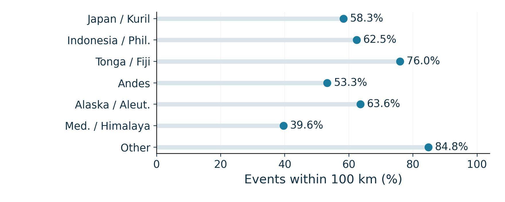
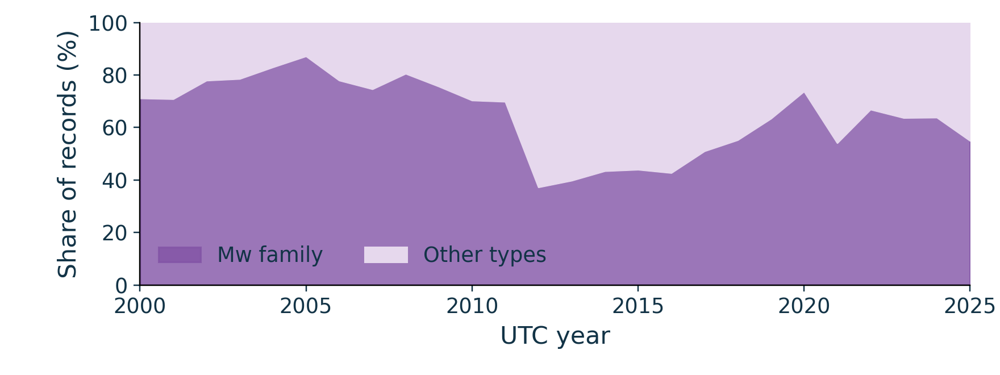
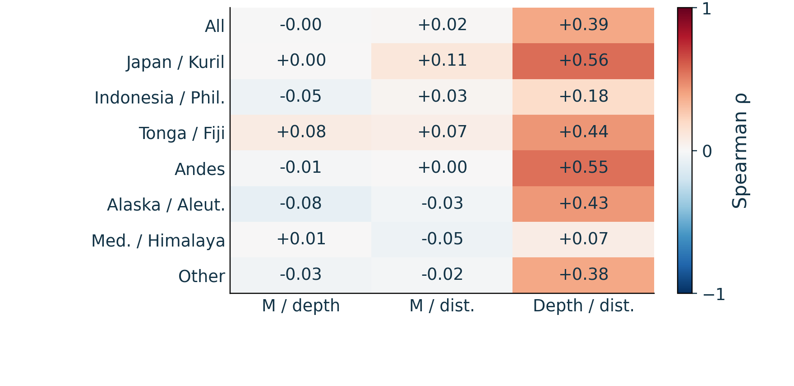
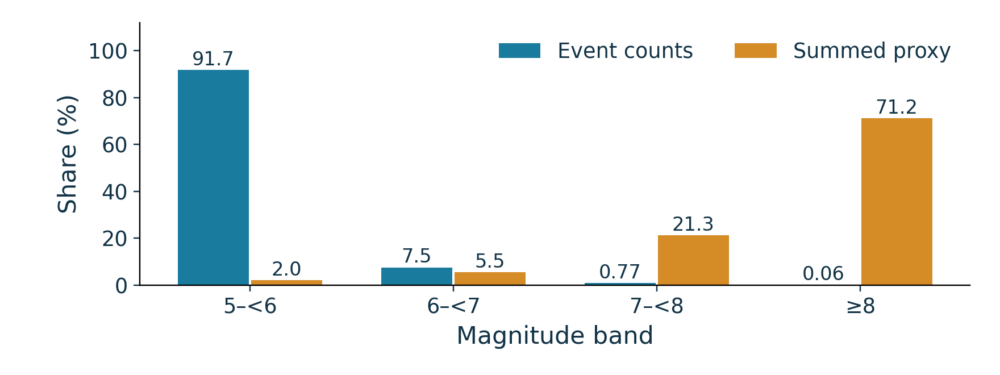
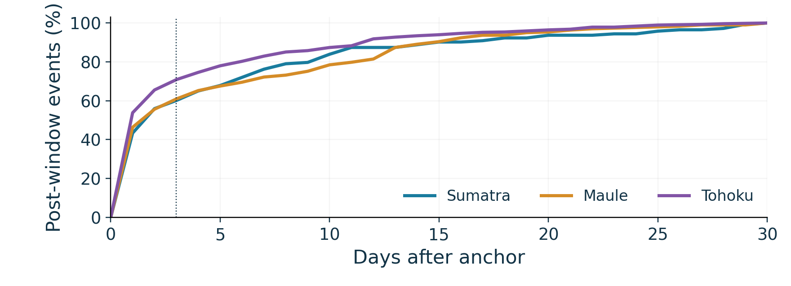

Four connected views of global earthquakes: space, time, depth and magnitude.
Research design
One frozen USGS earthquake-only snapshot links all five research questions: 46,463 unique events in [2000-01-01, 2026-01-01) UTC with preferred M≥5. Six priority-ordered geographic boxes plus Other partition the catalogue. Source requests, input hashes and reproducible calculations are retained. Geographic distances use PB2002 minor great-circle arcs on a sphere of radius 6,371.0088 km.
Extension from proposal 2.0: explicit equal-area and latitude-controlled spatial references; region-stratified associations; event shares versus an illustrative energy scale; normalized cumulative case curves; and radius/time sensitivity. Static panels were selected to answer these questions directly.
01 · Space / Where are the recorded events?
All 46,463 epicentres on an equal-area Mollweide map. Blue: shallow (<70 km); gold: intermediate (70–<300 km); purple: deep (≥300 km). Coastlines and PB2002 boundaries provide context. Points overlap: colour darkness is not an estimated density or hazard rate. Vector PDF
A geographic reference changes the question
At 100 km from PB2002, 70.15% of earthquakes are included, versus 9.42% of equal-area globe points and 10.50% of the latitude-controlled reference. The 7.45 ratio is a descriptive share ratio. Four scrambled Sobol designs of 16,384 points each give 9.38–9.53%; this range measures numerical sensitivity, not a confidence interval. All locations, including oceans, are eligible. Neither reference is a realistic seismicity null model. Vector PDF
radius_km
observed_pct
equal_area_pct
latitude_matched_pct
observed_to_area_ratio
replicate_min_pct
replicate_max_pct
50
43.917
4.964
5.542
8.848
4.889
5.023
100
70.150
9.418
10.504
7.449
9.375
9.534
200
87.896
17.265
18.994
5.091
17.206
17.346
500
97.133
35.982
37.878
2.700
35.913
36.017
The concentration is geographically uneven

Each dot is the percentage within 100 km using that region’s own earthquake denominator. Other combines many locations outside the six configured geographic boxes; its high share should not be read as a coherent tectonic-region effect. The model uses nearest minor great-circle arcs, not nearest stored vertices. Vector PDF
02 · Time / The catalogue fluctuates
The annual peak is 2,701 records in 2011. Comparing 2013–2025 with 2000–2012 gives a 6.63% lower M≥5 record rate and 15.42% lower M≥6 rate, adjusted for 4,748 versus 4,749 days. A positive full-period M5 Sen slope shows that a different summary can produce a different direction. These are catalogue descriptions, not a forecast. Vector PDF
A single global contrast conceals regional differences
Exposure-adjusted within-region changes range from −25.58% in Indonesia/Philippines to +8.82% in Mediterranean/Himalaya. All regions use identical periods. Unequal box areas and detection practices prevent interpreting raw regional counts as comparable hazard. Vector PDF
The two periods are not measurement-equivalent

Mw-family share changes from 73.45% to 55.05%. Horizontal-error availability changes from 0.28% to 86.80%; missing error does not mean zero error. Preferred magnitude types, reporting fields and exact-depth concentrations vary through time. A Mw-only subset still does not homogenize magnitude measurement or prove completeness. Vector PDF
03 · Depth / Similar medians can conceal different tails
83.20% of the catalogue is shallow. Japan/Kuril and Tonga/Kermadec/Fiji both have median depth 33 km, yet their deep-event shares are 5.01% and 11.76%. Andes has 26.19% intermediate-depth events. All records have reported depth; four negative depths remain in the shallow category. Vector PDF
Two finite sections make local structure visible
Local maps show the PB2002 trench (gold), route and ±100 km swath (blue), and trench origin (star). Direction A→B spans −200 to +1,200 km from the trench. Depth plots use equal kilometre scales; no vertical exaggeration. Membership also requires the parent region. Deep observations number 21/351 in northern Tohoku and 186/640 in central Tonga. Routes were chosen after exploration and are illustrative, not independent tests of slab structure. Vector PDF
Depth and boundary distance are associated

Spearman rank correlations use every eligible record in each displayed group. Depth–distance rho is +0.3868 globally and +0.5556 in Japan/Kuril. Magnitude–depth and magnitude–distance associations are generally weak, but pooled near-zero coefficients cannot exclude subgroup or nonlinear relationships. Correlations do not identify a causal mechanism; no independent-event p-values are reported. Vector PDF
04 · Magnitude / Large events are rare
The inclusive cumulative count N(M≥m) retains threshold ties: 3,874 observations at M≥6, 387 at M≥7, 28 at M≥8, and two at M≥9. The count axis is logarithmic. The M5 extraction threshold does not establish catalogue completeness, so no predictive Gutenberg–Richter b-value is fitted. Vector PDF
Frequency and a magnitude-based proxy tell different stories

The dimensionless illustrative proxy R(M)=10^(1.5(M−5)) scales by about 31.6 for a one-unit magnitude increase. M≥8 represents 0.0603% of events but 71.2144% of its summed value. Preferred scales are mixed: these are not measured joules, damage estimates or risk. The sum is dominated by rare extreme events. Vector PDF
Selected sequences on identical axes
Sumatra 2004, Maule 2010 and Tohoku 2011 use ≤500 km epicentral radius and UTC windows [−30,0) and [0,30) days relative to the exact anchor timestamp. The anchor is excluded. Before/after counts are 2/143, 1/302 and 33/563. Identical y-axis ranges preserve comparability; no offset is hidden behind a logarithmic axis. Vector PDF
Timing separated from total counts

Each curve is normalized by its own 30-day post-window total. The first three days contain 60.1%, 60.9% and 70.9% of the respective post-window records. The day-d value counts events in [0,d); all curves reach 100% at day 30. These time-and-distance selections do not establish causal aftershock membership. Vector PDF
Each cell is the post-window count at the indicated duration (7, 30 or 90 days) and radius (250, 500 or 1,000 km), excluding the anchor. All 27 windows are fully observed. A common colour range and printed counts support comparison. These nested samples are sensitivity checks, not independent replicates. Vector PDF
Interpretation and sensitivity
Removing the union of 30-day / 500 km windows around all 28 M≥8 anchors removes 3,090 unique records (including anchors) and changes the M5 period contrast to −3.37%. This is a window-removal sensitivity, not a declustered catalogue. Geographic boxes, threshold choices, changing reporting and selected case windows all affect the comparisons. The strongest defensible conclusions are descriptive: boundary concentration relative to geographic references, contrasting depth tails, rare large magnitudes, and temporally clustered selected sequences.
Review, provenance and reproducibility
Member 2’s event-type and distance choices required correction. The supplied all-type data contain 55 volcanic eruptions, four nuclear explosions and one landslide; excluding them reconciles the 46,463 earthquakes. Member 3 section methods and Member 4 magnitude calculations were adopted after numerical review. Raw submissions remain local audit material. See team review and extension methods.